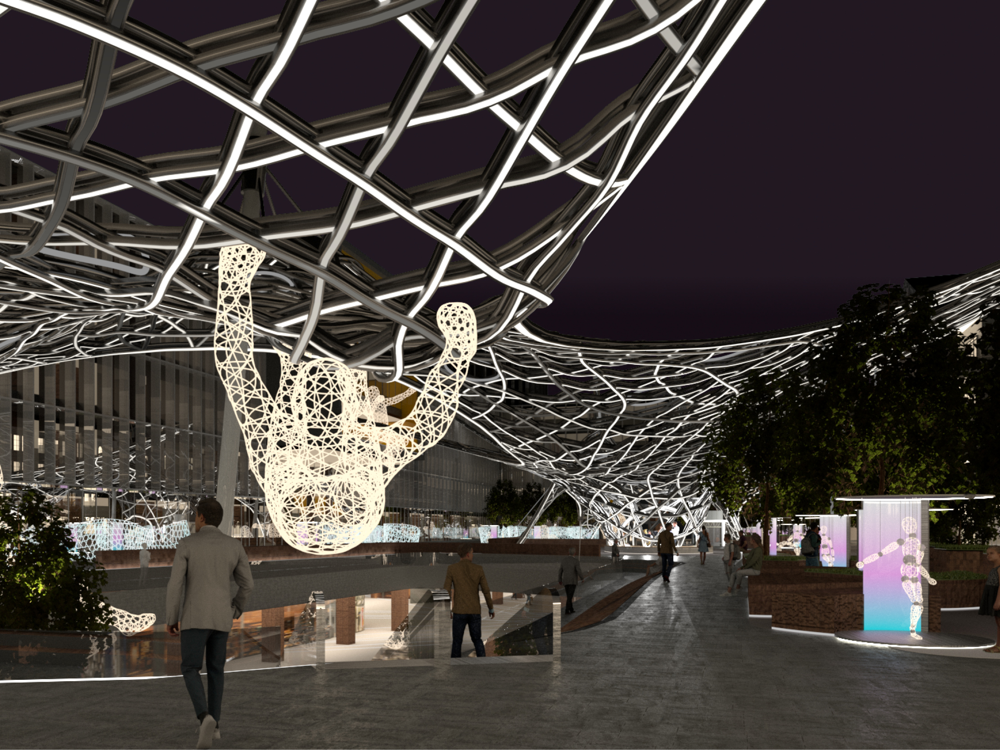

Networks: Design Optimization
Light-weight structure design, Interactive light & art installation, Design Optimization, Parametric design
Light-weight structure design, Interactive light & art installation, Design Optimization, Parametric design

_Digital Fabrication, Structure design, Artificial fog system design

_Digital fabrication, Typology Research, 3D printing, Parametric design

_Building performance optimization, Climate adpative design, Parametric design